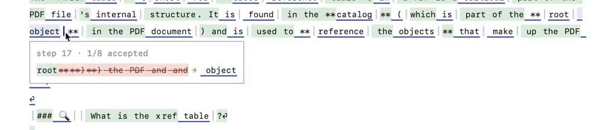
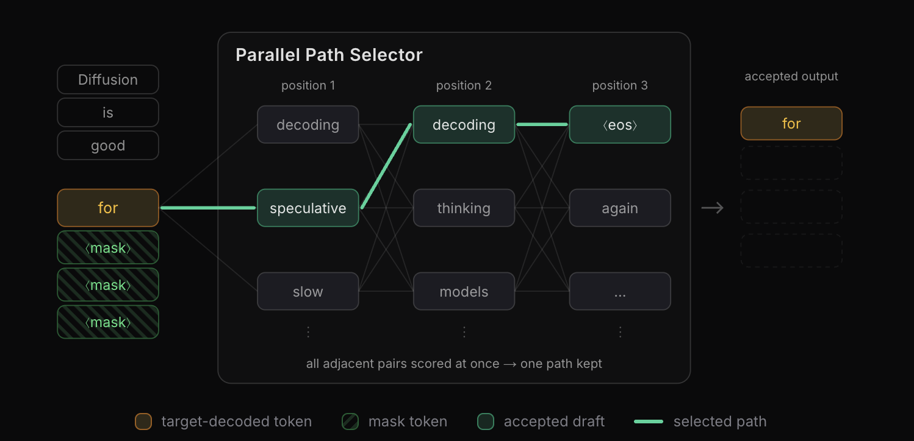
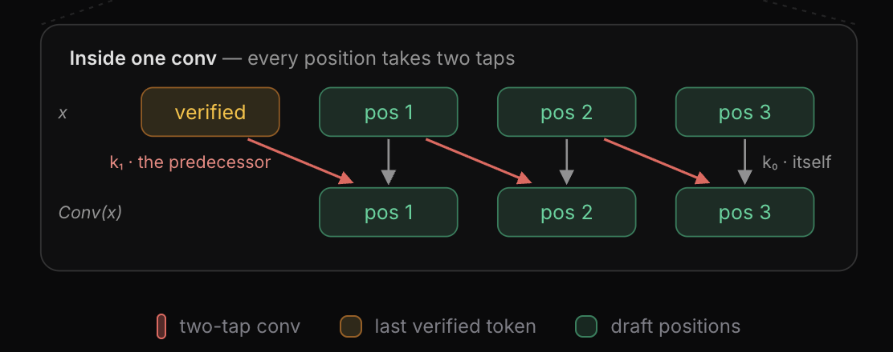

Paper Notes: dFlash 2
last updated 2026-08-19
Jian Chen, first author on the original dFlash paper, released dFlash 2 today. It features 2 core improvements over dFlash, which drive up average acceptance length without a huge increase in parameters or draft latency:
- a Markov token selector that considers the previous token when choosing the next one; and
- a convolution that smears internal representations across timesteps.
The big takeaway is that it drives up average acceptance length by 1 whole token over dFlash, and by about half a token over dSpark.
Total Semi-Autoregressive Victory?
dFlash 2 does a sequential selection (their “lightweight path selector”) to improve coherence for their single-pass diffusions. dSpark did something similar with their “semi-autoregressive” sampling approach, which gets you an additional half a token average acceptance length.
If you look at dFlash outputs, it’s pretty clear that single pass diffusion has trouble producing coherent blocks. dSpark fixed that with a small autoregressive head on top of dFlash. In my dSpark notes I had written:
Personally, I like the semi-autoregressive head, which fixes a lot of the issues I noticed with dFlash. … So by introducing a small autoregressive head on top of dFlash, you don’t slow down generation too much, but you can create more accurate drafts.
An example of one of these issues (from specspecs):

dSpark raised the issue that computing a full \(|V|\times|V|\) matrix is prohibitively expensive, so they compute a low-rank approximation. dFlash 2 instead shows that you don’t need to compute the whole \(|V| \times |V|\) matrix!
They found that correct token almost always exists in the top 16 tokens:
| Metric | 0 | 1 | 2 | 3 | 4 | 5 | 6 | Acceptance length |
|---|---|---|---|---|---|---|---|---|
| Recall@1 | 85.4% | 80.3% | 79.4% | 78.3% | 77.5% | 75.9% | 72.9% | 4.27 |
| Recall@16 | 99.5% | 97.3% | 94.8% | 92.6% | 90.8% | 89.4% | 87.8% | 6.79 |
So they focus on computing a \(16 \times 16\) pairwise table for each sequential token pair instead. This allows you to sample more coherent blocks. The figure from their blog:

Now, the interesting things about this is that the \(16 \times 16\) transition matrix is tractable to compute in parallel. So although there is some sequence-aware sampling going on, the sequential sampling is much lighter weight than the dSpark semi-autoregressive head.
The core focus is to keep everything as parallel as possible. You lose a bit of accuracy compared to dSpark (only a +0.3 token bump, instead of a full +0.5 token bump), but more parallel and still better than raw single-pass diffusion.
Smearing Representations
The second improvement is a small convolution layer that smears internal representations across 2 timesteps. The goal of this is to improve performance at deeper speculation lengths. The standard dFlash puts less weight on later representations, which severely hurts its performance past 4-5 tokens.
One fix for this is to make dFlash deeper. Deeper speculators are basically always more accurate. Remember, one benefit of dFlash over EAGLE is that its parallel decoding means it can be a deeper model, and thus higher accuracy. But this makes it unacceptably slow. They instead solve this by forcing local information into the representations at all timesteps.
High-level figure, from the blog:

The “two-tap conv” just does a simple convolutional merge of the previous token’s representation and the current token’s representation. This “smears” the representations two timesteps, which kind of forces the model to consider local information.
This seems to buy you the other +0.6-0.7 tokens of average acceptance length.
Takeaways
A few parting thoughts:
- Single pass diffusion needs help to generate coherent outputs. In DFlash 2, they push as much of that work to being done as parallel in possible. So kind of “semi-autoregressive”, but even less so than dSpark.
- The work is very cool and important, but the blog post is clearly AI-written. I don’t know how to feel about this. I personally prefer when people communicate in their own words. In this case, the work and its artifacts are eminently verifiable – anybody can run the DFLash 2 heads on their own hardware and look at acceptance lengths.
- I really need to turn specspecs into a vLLM plugin, so I can experiment with these kinds of improvements no day zero. But also, you should probably use it, it’s cool.